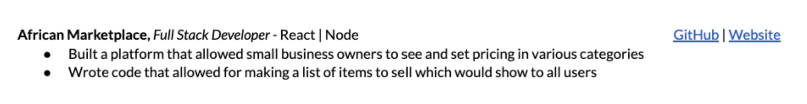

Informational interviews or coffee chats as we often refer to them here at BloomTech are informal conversations you have with professionals in your field of interest. The primary purpose is to gather information about a career field, industry, or company rather than to secure a job.
Unlike job interviews, informational interviews are initiated by the job seeker and focus on learning rather than being evaluated for a position. While not the primary purpose, job opportunities can come out of these types of conversations and are often a very effective method for networking that can lead to referrals or introductions to others that are hiring. Worst case scenario you learn from someone working in the industry and get some great advice!
Informational Interviews are often a longer term strategy to finding a job so that's why it's important to get started with them NOW. Building relationships with people in the tech industry before you graduate will give you more support during your job search after graduation. You may be reaching out to someone at a company that isn't currently hiring BUT these types of conversations can keep you top of mind when they do have a role open up that aligns with your skillset.
It can feel overwhelming to get started with informational interviews due to the sheer number of people you could reach out to. To help you get started create a list of 5-10 companies that you are interested in working for. Most graduates don't go straight to working for a FAANG company so for the purposes of this list go ahead and leave those off.
For each company you added to your list you will use LinkedIn to find a potential interviewee. Often you'll see the highest response rate when you target those that you have something in common with or whose background you are interested in. Spend some time looking through profiles to find someone that either:
Remember: You are going to want to spend some time tailoring your messages to these individuals and you want to give them a reason to feel compelled to speak with you. This usually means highlighting something in your message about their background or calling attention to something you have in common.
Follow these 2 steps to get started with informational interviews:
Step 1: Create a list of 5-10 companies you are interested in working for
Step 2: Use LinkedIn to find a contact at each company that either
Now that you have identified who you want to connect with we are going to walkthrough how to find their contact information and how to write an appropriate email. Similar to the outreach covered in Unit 1, you will use one of the following email finders in order to contact every person on your list: Clearbit's email extension, Skrapp.io or Hunter.io.
No matter who you are sending your outreach to you should be including an "ask" which is often to jump on a call to discuss the role, their background, etc. An easy way to get this scheduled is to include your own personal Calendly link. If you don't already have one, here's how to create a free account:
Please review the subject lines/email templates below for ideas to get started with your outreach email to the contacts you identified. Remember you do not have to use these exact templates or subject lines. Get creative and make them your own!
NAME - Hello!
I've been following COMPANY NAME for awhile now and came across your LinkedIn profile when I was doing some research. I noticed you came from a non-traditional tech background. I am currently attending the [Insert Program Name] program at BloomTech and am really interested in hearing a bit about your journey into the tech industry.
Right now I'm really just looking for advice on how to stand out in the market and how to best utilize my bootcamp certificate and experience. Would love to ask you some questions about your experience at COMPANY NAME and your first job search.
Would you be willing to connect for a 20 minute call so I could ask you a few questions? Please feel free to grab a time that works for you on my Calendly: INSERT LINK.
I look forward to speaking with you soon!
NAME
NAME - Hello!
I've been following COMPANY NAME for awhile now and came across your LinkedIn profile when I was doing some research. I was particularly interested in your contributions to [insert project or achievement].
I'm currently attending BloomTech's [Insert Program Name] program and am exploring opportunities in the tech field. Would love to ask you some questions about your experience/background and pick your brain on the tech industry.
Would you be willing to connect for a 20 minute call? Please feel free to grab a time that works for you on my Calendly: INSERT LINK.
I look forward to speaking with you soon!
NAME
Hi NAME,
Hope your week is going well. Just wanted to bump my note to the top of your inbox. I know how hectic things can get and wanted to make sure we could find a time to connect.
Let me know if you are free in the coming days for a quick call and feel free to grab a time on my Calendly here: INSERT CALENDLY.
Thanks again,
NAME
Follow the 3 steps below to send your first informational interview request:
Step 1: Write your email using the templates above.
Step 2: Find an email for your contact using ClearbitLinks to an external site., Hunter.ioLinks to an external site., or Skrapp.ioLinks to an external site.
Step 3: Send your email!
Your cold contact responded to your request, and is open to a quick phone call! First, congratulate yourself on a job well done! You've advocated for yourself and given yourself a chance to expand your network and learn about potential opportunities. Now it's time to prepare for the call.
It's important to remember you have two goals with your informational interviews:
It sounds small, but this is really your primary goal. People won't refer people they don't like! Remember that people love to talk about themselves and, most importantly, love people that invite them to talk about themselves! Do the following 2 things prior to your meeting to make this goal easy:
Before hopping off the call, make sure to ask these important questions, which work to drive the conversation towards internal referrals:
I reached out to you specifically because [company name] is one I've been interested in for awhile and am even more excited about the potential of working at the company after chatting with you, which I didn't think was possible. Once I graduate what advice do you have in standing out in the application process?
If this doesn't yield a lot of movement — i.e. you get more of a "study up on code challenges" answer than "reach out and I'll refer you to the role" move on to this ⤵
Is there anyone else within the company or within your network that you would recommend I speak to?
If you get a name from this person, see if they are open to making the connection for you. "Thank you so much for that name! Are you able to connect the two of us?"
If you don't get much from either question, never fear! An informational interview is never a waste of time. You've just met a new contact in the tech field (and made a new friend!). Tech hiring is very network- based. If this person gets contacted by a recruiter in the future or sees another role in their network, it is very possible they'll think of you for it. This is another reason to make sure you set a reminder to follow up with them in the future! Remember these are people that can help you when you graduate and start looking for jobs, you never know where these relationships might lead.
You've completed the informational interview but aren't done just yet! Follow these 2 simple steps to ensure you keep the door open for further conversations and help.
People are busy and if they gave you 20-30 minutes of their time it is vital to thank them for doing just that. It's the best way to leave a good and lasting impression as well as keep the relationship open. You can use the template below as a place to start but be sure to add specific details from your conversation to personalize the email.
SUBJECT: Thank you for your time today!
Hi [name],
Thank you so much for taking the time to meet with me today to talk about your experience at [company name]. After learning more about (share one or two takeaways from the interview about the company/team's priorities), I'm even more excited about entering the tech field! (Optional note about something you chatted about/inside joke/article that relates, etc.)
I really appreciate your help and offer for future referrals— I will be sure to reach out in the future.
Thank you for your consideration,
NAME
No matter what results from the call, make a calendar reminder to follow up with this person in the next 1 - 2 months. Consider sending them an article about something related to your conversation or a quick snapshot of a project you are working on.
In the Career Readiness module of Unit 1 and Unit 2 we got your resume started and began building your experience and project sections. Today we are going to continue to build your resume and understand how to best utilize them in the job search process.
In this core competency we are going to:
Throughout the last 4 sprints you have continued to build skills and complete projects that you can continue to add to your resume. A technical skills section on your resume allows for a reader to quickly scan your tech stack and gain a high level understanding of what you have experience with. It's also an easy way for Applicant Tracking Systems (ATS) to catch key technical skills they may be filtering for.
The projects section of your resume is a crucial component that allows you to showcase your practical skills, creativity, and problem-solving abilities to potential employers. As a current learner and soon to be recent graduate, highlighting relevant projects can significantly enhance your resume and make you stand out from the competition.
It's important to continually update this section of your resume with your most recent work. By the time you complete the program your goal is to have 2-3 quality projects on your resume. These projects can be any Guided Projects you completed throughout the program, as well as Sprint Challenges. Remember to use this format as much as possible as you write your bullet points for each project:
Accomplished [X] as measured by [Y] by doing [Z]. In other words, start with an active verb, numerically measure what you accomplished, provide a baseline for comparison, and detail what you did to achieve your goal.
Pro Tip: If you really want to stand out in the job market you can begin a side project NOW. This is a way to continue to build on your skills while also creating something no one else at BloomTech will have on their resume. This type of project can go on your resume the first day you start it. It does not need to be completed in order to add it. Just list them as In Progress to make the reader aware.
Pull up the resume you created in Unit 1.
In case you need it, HERE is the BloomTech Template.
❗Remember: to use these templates you'll need to make a copy: "File" >> "Make a copy" >> Save under a new name.
Backend: AWS Lambda, DynamoDB, Java, Github, File I/O, ArrayLists
Additional: Agile Project Management, Algorithm, Debugging, Unit Testing, JSON Read/Write, Hashing, Deployment
If you have learned technical skills outside of BloomTech feel free to begin adding them in this section as well.
Formula:
Accomplished [X] as measured by [Y] by doing [Z]. In other words, start with an active verb, numerically measure what you accomplished, provide a baseline for comparison, and detail what you did to achieve your goal.
Format:
Tailoring a resume involves customizing your existing resume to better match the specific requirements and preferences of the job you are applying for. This process helps highlight your most relevant skills and experiences, demonstrating to employers that you are a strong fit for the role. Here are the steps to effectively tailor your resume:
Include your positions and projects that closely align with the job description.
Note: At this point in your career transition you may be including all projects and previous experience to get to one page. As you gain more experience you may create a "Master Resume" where you include everything you've ever accomplished (work, projects, skills, etc) and then pick and pull what is most relevant based on the job description.
The smallest but still impactful update is making sure the headline on your resume matches that of the role you are applying for. For example, if you are applying for a Frontend UX Developer role make sure the title under your name reads "Frontend UX Developer." This should be updated for every position. When you include more than one title it makes you seem undecided to the employer and can be a reason not to move forward with your application.
Tailoring your bullet points is the easiest way to ensure you are effectively including all relevant keywords from the job description. Maybe you've done many of the things currently listed on the job description but your resume doesn't do a great job of showcasing that. You can pull direct verbiage from the job description to rework your bullet points. This doesn't mean to lie, you still want your bullet points to be a reflection of your experience but you can rewrite them to more directly match the job description. This helps your resume get picked up by Applicant Tracking Systems (ATS).
In your Technical Skills section, be sure to add any skills you might not be including relevant to the role. Don't feel like you have to delete any skills not relevant to the role. The additional skills can still help you stand out as a candidate. This should not be the only place you add keywords. While it's the easiest place to incorporate, adjusting your bullet points is going to be the most impactful.
Everything within the first section would be considered key skills that you would want to include in your resume if you have experience with them. If you don't, that's okay, just leave them off.
As for the core competencies mentioned, these are things most people have experience with from previous roles. This is where that non-tech related experience you have comes into play. You can use the bullet points you currently have to get started and reword to include the verbiage in the job description. I'm going to show you how to do this using one of our resume templates.
Let's use this bullet point from the job description:
1. Passion for exceeding expectations and continually growing skills
Here is how you could pull some of the verbiage into a bullet point from the resume:
Exceeded expectations by achieving 300% of sales target by researching markets and identifying new revenue generating opportunities.
Here is another bullet point from the job description:
2. Multitasking skills as you may need to juggle multiple projects at the same time
Here is an opportunity to add another bullet point to the resume to include some verbiage and highlight a skill not currently showcased on the resume:
Juggled multiple clients and projects at the same time and ensured all projects were completed on time and to client satisfaction.
You do not want to make experience up but often you'll find you've excluded experience you have just because you didn't think about it when you initially created the resume.
Pro Tip: Keep your resume as a Google Doc and create a new one every time you apply for a role. This way you keep any previous versions that may make sense to use for future roles you apply for. You can do this by going to File > Make a Copy > Role Title_Firstname Lastname
Tailoring your resume involves understanding the job requirements, aligning your skills and experiences with those requirements, customizing the content of your resume, optimizing the format, and carefully reviewing the final product. This process demonstrates to employers that you are a well-qualified candidate who pays attention to detail and is genuinely interested in the specific role.
It's that time again! You've completed another 4 sprints and have gained new skills and experience that make you qualified for roles within tech. We will continue to explore jobs in every career readiness module throughout your time at BloomTech. Remember, these might not be the flashy titles you originally had in mind, like Software Developer or Data Scientist but you'll get there!
We will be exploring tech-adjacent roles that align with the tech skills you've learned but will also be using some of the soft or transferable skills you've gained from pre-BloomTech experiences. The best part - you can apply for these roles TODAY. It's not just about snagging some income – it's about gaining valuable experience that'll make you more marketable as you get closer to graduation.
Every time you hit this core competency in the Career Readiness Module the list of job titles you can apply for will grow, as your skills grow! We wanted you to see that you're already learning skills relevant to the tech industry and have ways to start using those now. That being said, you do not have to apply for any roles at this point in the program. However, we still encourage you to go through the content and take a stab at finding roles on your own. This will help you feel a bit more confident when you do decide to jump into the job search.
The list below is not exhaustive but does give you an idea of the types of titles you will want to explore as you search for roles. Keep in mind these can be full-time or part-time positions. Part-time/contract roles can help you continue to build your technical skills while also providing some additional income as you finish the program. And you never know, they could lead to a full-time opportunity closer to graduation.
Reminder: Lean into the skills you've learned from a previous profession as well - they can be extremely helpful in separating yourself from others in the job market. For example, if you worked in any kind of customer service role before coming to BloomTech, highlighting those skills on your resume for a Customer Support role or Client Success Specialist will help shape you as a more well-rounded candidate. Your background and experience pre-BloomTech will impact the roles you are eligible to apply for.
This section is going to look the exact same every time you get to it because we want you to get comfortable and familiar with the content! Be sure to try out different job boards each time so you know the ones you like when you really dive into the job search. If you aren't applying, that is OK. We just want you to see what's out there and understand how to find the opportunities.
If you are looking, some part-time or contract work may be the best option so that you can do it amidst your already busy schedule. You can find these roles across many platforms but you'll find some job boards specific to part-time/contract roles listed first.
Before you get started using any job board keep these tips in mind:
Select a job board from the list provided above.
The General Code Assessment (GCA) is a timed, multiple-choice test that assesses your coding skills and knowledge. It is designed to help you determine if you are ready for the Applied Computer Science unit.
If you haven't already taken it recently, try and attempt it every 2 weeks.
You can find the link in the Portal.